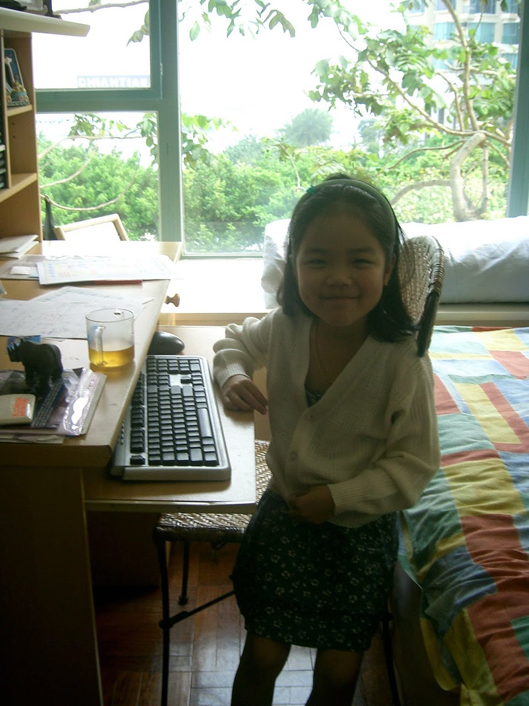

Becky
Zhang
I've worked in editorial at The Point, Los Angeles Magazine, and the LA Review of Books, and in web development at Slate Magazine. I led the Claremont Colleges literary journal, Agave Review, for two years. I've also conducted research on migrant domestic workers and the 2019 protests in my hometown of Hong Kong. I am interested in the dissemination of culture and ideas through digital media.
